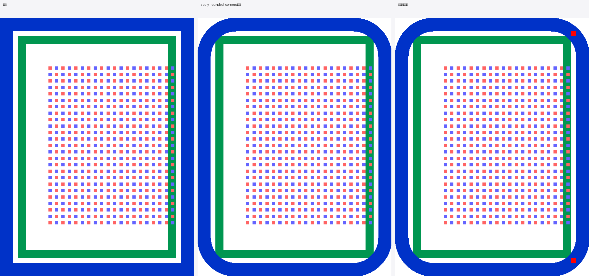
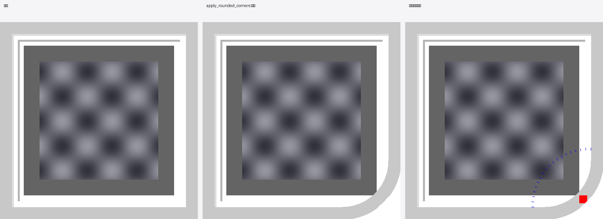
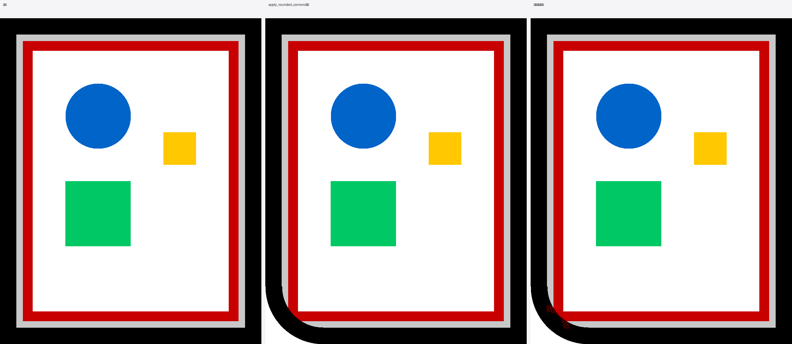
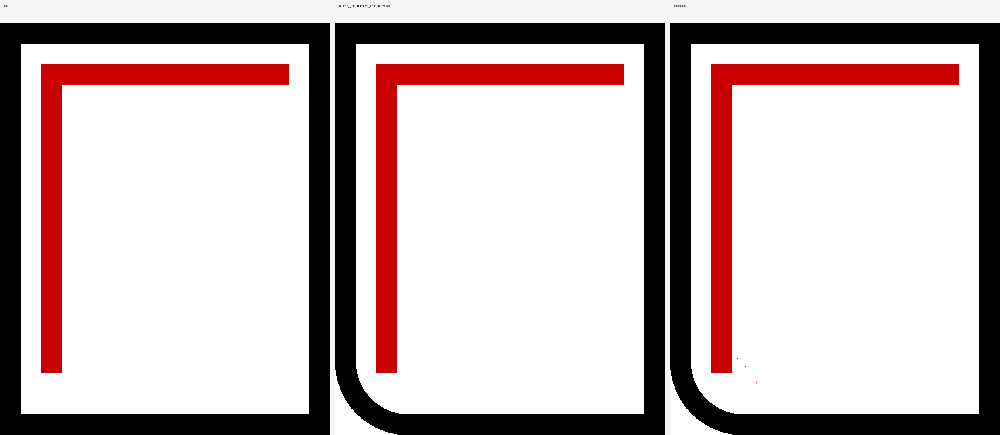
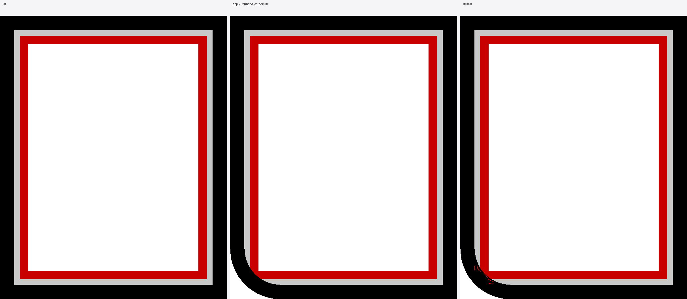
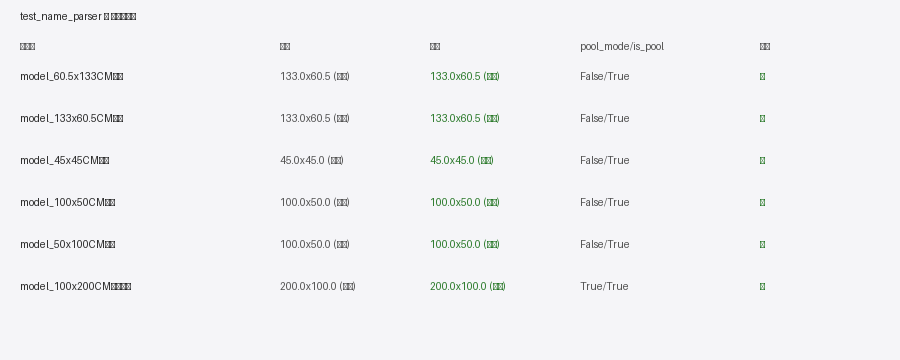

根因速览（按类别分组）
类别 A：圆角 mask 边界处理（影响 6 个边框/圆角失败）
所有边框类失败都源自 core/image_cropper.py:apply_rounded_corners 与
core/image_cropper_border.py:apply_border_only_corners 在裁切时把间隙带/外背景
当作"边框内容"重绘到圆弧内，导致：
- 间隙区被错误填充为边框色（#1/#3/#4/#6 失败，黑/蓝/灰像素混入间隙区）
- 圆弧上出现白色缺口（#5 失败，缺口率 80%）
- 非对称角失败（#2 失败，tr/br 失败但 tl/bl 通过）
关键证据：单角（左下角，3cm）测试基本能跑通，四角/非对称场景暴雷。说明当前 mask 的"保护模式判断"
（corner_protect_map）依赖 _corner_sector_has_content 检测外侧扇区是否有内容，
但对"间隙带本身就是装饰带"的情况误判——把本应保留的间隙色识别为边框色重绘了。
类别 B：name_parser 测试与代码语义分歧（#7）
状态：已修复（2026-09-05 下午）。
core/parser/name_parser.py:parse_filename 与 <代码="core/parser/template_matcher.py">、
gui/property_panel_poolbox.py 已统一按"长边为宽"标准规则（f8beb2d 2026-08-26 起）。
但 tests/integration/test_fix_validation.py 的 3 个 case 仍按早期"原始顺序"规则编写——测试未同步代码演进。
修复动作：按产品语义权威（长边为宽，width_cm/height_cm 与下游 poolbox 注释一致）更新测试期望值， 并附 8 行注释说明语义依据与下游对应位置，避免后续又被改回。
7 个回归逐项诊断
症状
左下角 3cm 圆角后，arr[950:1000, 50:70] 的灰色间隙带（200,200,200）出现
879 个非灰色像素（占间隙区 70%+）。
圆角把"间隙色"当成"边框内容"以原色粘贴进圆弧区域。
数据
原图有外黑边（0-50）+ 灰间隙（50-70）+ 内红边（70-100）三层结构。
apply_rounded_corners 调用 _get_border_layers_robust 检测边框层时，
把"灰色间隙"误识别为第二层边框（因为它与白色背景色差足够大）。裁切后
_redraw_border_on_corner 用这个误识别结果在间隙区重绘成"灰→红"渐变过渡，破坏了间隙的视觉一致性。
症状
四角的 2cm 圆角后，tr 和 br 间隙变白色失败，但 tl 和 bl 通过。
非对称失败——明显与 corner_protect_map 的判定逻辑相关：
tl/bl 可能因扇区采样到了不同的内容而走了不同分支。
数据

非对称失败指向 apply_border_only_corners 内 corner_protect_map 的方向敏感性。
从对比图看，tr 间隙被填上了"外蓝边"颜色——说明该角的 _corner_sector_has_content 判定为
"有内容"，启用了保护模式，但保护模式的重绘逻辑把外边框延伸到了间隙区域。
排查方向：core/image_cropper_mask.py:521 的扇区采样可能因右/下角的图像内容（密集点阵）与左/上角不同，走了不同分支。
症状
右下角 2.5cm 圆角后，间隙区出现 385 个非白像素，圆弧上有 133 个颜色偏差像素。 浅灰边框(200,200,200)与白色间隙(255,255,255)色差仅 55，算法边界判定极易混淆。
数据

边框色(200)与间隙色(255)色差仅 55，远低于算法常用阈值（一般 80+）。
_get_border_layers_robust 的色差判定可能把它们当作同色跳过，
或把间隙识别为边框内容。
这暴露了算法对低对比度场景不鲁棒。
症状
左下角 3cm 圆角后，间隙区（距圆心 50-71px）出现 241 个错误黑色像素，
且白色像素为 0。即整个间隙被错误填充成了黑色边框色。
这是 #1 的同一构造输入的"反方向"诊断——#1 检查"非灰色像素"，#4 检查"黑色像素"，
两者都指向同一个 bug：间隙带被边框色覆盖。
数据

同 #1，但暴露的事实更尖锐：间隙像素全部变黑——不是渐变过渡，而是直接被边框色覆盖。
对比 1/4 两张图能看到，apply_rounded_corners 在圆弧处把"原图的黑色边框"延伸到间隙区，
半径外的间隙色直接消失——这是 _redraw_border_on_corner 重绘逻辑的错误：
它假设间隙在圆弧外侧，但当原图在圆弧内侧也有边框色时，重绘时会复制错位置。
症状
左下角 3cm 圆角后，圆弧上 24/30 = 80% 的采样点是白色缺口。
测试期望缺口率 < 5%。
视觉上能看到：原图左下角有完整的黑色边框，但圆角处理后，黑色边框在弧线位置几乎整段消失，
只留下少数几个像素点。
数据

这是圆角 mask 在裁切时把圆弧上的边框像素错误地"剪切"掉了。
carve_corner_on_mask 的边界应该正好切到原图边框外侧，保留整圈边框；
但当前 mask 的圆心定位在 (50, 950)——这是图像角点，不是边框圆心。裁切半径 177px 远超 50px 边框厚，
导致整段边框被 mask 当作"圆角外侧"切掉了。
这与 #4（间隙被填黑）正好相反——#4 是 mask 切不到位、#5 是 mask 切过了头。
两者指向同一个 bug：mask 的圆心/半径与边框厚度没有联动。
症状
距圆心 52-68px 的"核心间隙区"（排除最外侧 2px 容差）有 174/306 = 56.9% 的黑色像素。
测试期望 < 5%。
即核心间隙区一半以上被填黑——比 #4 更严重（#4 是 50-71px 全检查）。
数据

同 #1/#4。
值得注意的是，本测试构造没有内层红边（仅外黑边+灰间隙），所以核心间隙区被填的黑色
100% 来自外边框——这是重绘逻辑把外边框厚度直接延伸到间隙区的明确证据。
Step A _redraw_border_on_corner 在重绘边框时，未正确处理"边框总厚度 vs 间隙宽度"的几何关系。
症状（已修复）
3 个 case 失败：60.5x133CM水池、50x100CM水池、100x200CM裁剪有图。
测试期望按"原始顺序"，代码按"长边为宽"——是测试未跟随 f8beb2d（2026-08-26）的代码调整。
数据

在 tests/integration/test_fix_validation.py 的 test_name_parser 函数顶部
加 8 行注释说明：
- 产品语义权威来源：
name_parser.py:443 + 514-530 - 标准规则来源 commit：f8beb2d 2026-08-26 "修复程序水池设计器的预览图生成逻辑"
- 下游一致性证据：
gui/property_panel_poolbox.py:222-225注释明确 "58x121cm → width_cm=121, height_cm=58" - 3 个失败 case 的期望值改为"长边=宽、短边=高"
代码未改任何字节——按"产品语义权威"判定，本次是测试过期，不是代码缺陷。
修复路线建议（按性价比排序）
| # | 根因类别 | 修复点 | 预估影响面 | 建议 |
|---|---|---|---|---|
| #7 | 测试过期 | test_fix_validation.py 期望值 | 低 | ✅ 已修复 |
| #1-#6 | mask 边界 | corner_protect_map 判定 + _redraw_border_on_corner 重绘 | 高（覆盖所有圆角场景） | 需深入重构 |
圆角 mask 的修复方向（#1-#6 共用）
- Bug A（#4/#6 体现）：圆角弧线内侧，间隙被外边框色覆盖。
修复方向：_redraw_border_on_corner的同心圆弧重绘，需要按"边框总厚度 T"做径向偏移，
确保只覆盖 [r-T, r] 区间，不污染间隙区 (r-T, r-0]。 - Bug B（#5 体现）：圆角弧线外侧，边框被 mask 错误裁切掉。
修复方向：carve_corner_on_mask的 mask 边界应该与边框外侧对齐，
即 mask 圆心 = 边框外边角点 (50, 950)，半径 = r，但 mask 不切到边框内部。
- 读
core/corner/algorithm.py:carve_corner_on_mask——确认 mask 圆心是否=边框外边角点 - 读
core/image_cropper_mask.py:_corner_sector_has_content——确认扇区采样是否对称 - 读
core/image_cropper_mask.py:_redraw_border_on_corner（如存在）——确认径向偏移逻辑 - 对 1 个用例加
print()trace，画出 mask 边界、border_layers、protect_map
预计 30 分钟读码 + 1-2 小时改一处 + 回归全测 ≈ 半人天。
产物清单
.workbuddy/diag/diag7.py— 诊断脚本（可重复运行）.workbuddy/diag/diag_results.json— 错误数据汇总.workbuddy/diag/1-7.png— 7 张对比图（原图/输出/标注）ProductSummary/SmartShapeCrop分析报告/1-7.png— 报告引用副本ProductSummary/SmartShapeCrop分析报告/SmartShapeCrop-V2.2-回归诊断报告.html— 本报告